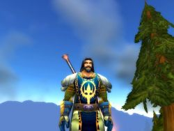

Joué par :
Egide Joué par :
[ Information masquée ] Age : 25
Lieu de naisance : Ruisselune, Westfall
Signe de naissance : Faucon
Sexe : Homme
Race : Humain
Faction : Alliance
Formation : Paladin
Niveau : 51
Guilde : Volonté Artisanat 1 : Mineur
Artisanat 2 : Forgeron
Informations hrp : Voilà ma première expérience RP dans WoW ! Ca donne un paladin, parce que je n'ai jamais testé cette classe, humain car j'aime beaucoup leur background Warcraftien - et qui est devenu mon perso principal. Je découvre petit à petit toutes les subtilités de Kirin Tor, et j'en suis tombé profondément amoureux :)
Description : Elevé dans les plaines dorées du Westfall, Khinan Frostsoul fut effondré lorsqu'il apprit que ces terres furent bafouées et ses fermiers chassés, par une confrérie de voleurs et d'assassins, les Défias.
Khinan a toujours été un garçon mystérieux, mélancolique... Constamment tiraillé entre sa compassion, sa foi en la Lumière, et un profond dégoût pour les évènements qui obscurcissent les terres de Lordaeron, provoquant en lui une haine immense... Il est bien décidé à faire cesser la guerre, même si dans le même temps, tuer provoque en lui une certaine satisfaction...
Ère du Renouveau [14]
Lune de la Force [14]
Décade du Panda [2]
Chapitre I -- Remise en question
Voici un passage de la vie d'un quelconque paladin, Khinan Frostsoul.
Ces récits se dérouleront depuis la Première ère (dite Ère du Renouveau) et se prolongeront probablement jusqu'à la Troisième Ère... voire plus ! Bonne lecture à ceux qui passeront par là !
PS : Je tiens à m'excuser pour la boulettitude des petites blagues qui circulent dans mes récits, mais j'peux pas m'en empêcher.
Ère du Renouveau, Lune de la Force, Décade du Panda, 1er jour
"Holà tavernier !! Encooore une chopine sioupl..." Le temps d'articuler maladroitement ces quelques mots, que je suis tombé à la renverse. La suite, je ne m'en souviens pas. Il paraît que je me suis à parler un langage d'un autre monde, genre Orc ou Troll qui essayerait de parler Commun... On m'a dit aussi que j'ai courtisé - assez lourdement - la serveuse de la taverne de la Fierté du Lion, dans le Goldshire. Enfin tout ça c'est du passé, maintenant il faut que je fasse passer ce foutu mal de crâne ! Bah, maintenant j'ai l'habitude, un p'tit tour chez l'elfe, et me voilà frais comme un pic d'Alterac ! *Toc toc toc* J'entre doucement en surveillant mes pas dans la petite boutique de remèdes de Selthinea, dite l'elfe, c'est beaucoup plus court et de toute façon son nom est imprononçable. "Bonjour, madame, pourriez-vous me donner...
-Un elixir de soulagement de crâne noyé dans de l'alcool durant toute la nuit ? m'interrompt-elle, sur un ton ironique.
-Euh... oui, enfin, comme d'habitude... 10 pièces de cuivre, c'est bien ça ?
-Oui, toujours... Désolée pour mes propos Khinan, je suis juste attristée de voir dans quel état vous vous mettez chaque soir...
-Oui, merci beaucoup. Bonne journée madame" lui réponds-je, mettant ainsi un terme à la conversation. J'entends ces sermons tous les matins, et tous les soirs je me saoûle jusqu'à oublier mon nom, même Jorian l'Oubli n'est pas tombé si bas ! Pourquoi je fais ça ? Me détruire. Tous ceux de mon âge partent d'Elwynn afin de prêter main forte à la Grande Alliance. Je ne suis pas interessé par la guerre. Tout cela me répugne, ou m'ennuie même... Cinitia, tu me manques ma petite soeur... Je t'ai laissée en apprentisage à la Cathédrale de Stormwind voilà six mois déjà. En partant, je t'ai promis que je reviendrais te chercher couvert de gloire. Tout cela me semble si lointain... Encore un verre...
Ère du Renouveau, Lune de la Force, Décade du Panda, 7ème jour
"Non, je vous l'offre, j'en ai assez de vous soutirer tout votre argent. Ne revenez plus Khinan !" Ce sont les derniers mots de cette maudite elfe ! Je ne vois que deux solutions maintenant : affronter des maux de crâne continuellement, palpitante perspective - ou enfin trouver la volonté pour commencer ma vie... Car elle s'est bel et bien arrêtée. Mais depuis quand... La mort de mes parents ? Ma séparation avec ma soeur ? Je n'en sais rien... Ce n'est pas important... Ce qui est important, c'est de prendre une décision...
Ère du Renouveau, Lune de la Force, Décade du Gorille, 6ème jour
Dieu que j'ai mal ! Je ne supporte plus cette douleur ! Cette taverne... J'y passe mes journées et mes nuits... Ai-je encore quelque chose à faire dans ce monde ? Pourquoi ne me laisse-je pas partir, mourir ? Cinitia... Ma petite soeur... Que dirais-tu en me voyant ? Depuis presque sept mois je me noie dans l'alcool, et toi tu crois que je suis en train de sauver des vies, d'en prendre d'autres... Je vais changer, je te le jure. Je vais trouver la volonté d'aller de l'avant.
Ère du Renouveau, Lune de la Force, Décade du Gorille, 7ème jour
Je fais des progrès, je n'ai rien bu hier soir. Pourtant ce n'est pas l'envie qui m'a manqué. J'ai réfléchi à beaucoup de choses. Oui je veux reprendre ma vie là où je l'ai laissée, oui je veux que ma soeur soit fière de moi, et je jure que j'irai au bout des choses, même si cela risque d'être dur. Ma quête intérieure en somme... J'ai tellement de choses à faire, à dire. Commençons tout de suite. *Toc toc toc*
"Bonjour Selsi... Selthi... Selni-c'estça... ? L'elfe me regarde avec un tendre sourire et me répond calmement :
-Presque Khinan, mais je ne vous blâme pas. Que puis-je pour vous ? Je crois sentir de grands... bouleversements en vous.
-Oui... J'ai décidé de changer. Je dois aller de l'avant, et si je ne le fais pas de façon radicale, je crois que ça ne marchera pas.
-C'est une bonne chose, c'est inutile de le dire, dit-elle d'un ton assez froid, alors que parralèlement je vois un sourire s'effacer de son visage si mystique.
-Je le pense aussi. Je tenais à vous le dire, ainsi qu'à vous remercier pour votre patience, et votre soutien.
-Cela fait partie de mon travail, et le soutien est disons... un héritage fraternel.
-En tout cas il m'a été indispensable, je m'en rends compte maintenant... Je dois vous laisser, il faut encore que je me prépare, un long voyage m'attend. Merci encore, Dame Sel...thinea, et que la Lumière soit toujours avec vous.
-Merci, qu'Elune vous accompagne, Khinan Frostsoul. Sachez que mon aide vous sera toujours apportée si le besoin s'en fait sentir." Sur ces quelques mots, je quitte la boutique de Selthinea, peut-être à jamais. Ce soir, je finis mes préparatifs, et cela m'évitera ainsi de boire. Je sais où aller, mais pour l'instant c'est un peu ambitieux... et loin ! Il me faut de l'argent et... un régime apparemment ! Je n'avais pas vu ce bide ! Je vais donc commencer par visiter le Northshire et son abbaye, on dit qu'ils ont toujours besoin de volontaires là-bas... À nouveau brandir ce marteau... C'est à la fois exaltant et terrifiant...
Chapitre II -- Faire ses preuves
Ère du Renouveau, Lune de la Force, Décade du Gorille, 8ème jour
Lair est plus sain ce matin Ou peut-être est-ce mon corps qui lest Je me suis levé à laube. Le Goldshire sest bien vite réveillé, comme à son habitude. Selthinea va ouvrir sa boutique dans peu de temps. Kelzo est assis dans lherbe, il contemple la vie sagiter autour de lui avec ce regard si distinctif quont les elfes. Jen fais de même pendant un instant, même si cest à lintérieur de moi que je regarde, comme pour immortaliser le moment où tout a été bouleversé. Je sais pertinemment que rien nest acquis, dailleurs si cétait le cas, pourquoi continuer ? Il est temps dy aller.
Labbaye du Northshire est très jolie, et si on enlevait les loups ainsi que les brigands, peut-être serait-elle visitée. En regardant autour de moi, je maperçois que quelques guerriers, jeunes paladins et autres essaient de traquer les loups. Très peu pour moi Je nai pas que ça à faire. Je lai dit, il me faut du radical ! « Bien entendu Khinan, me répond le maréchal McBride après avoir entendu ce « besoin ». Il y a justement une bande de voleurs dans les vignes à lest, ils sèment la pagaille Si vous voulez régler le problème, je vous en serais fort reconnaissant. Jai déjà assez de travail comme ça, je nai pas besoin de brigands dans mes pattes ! » Alors voilà Une bande de voleurs à exterminer. Cest sûrement un bon exercice de remise en forme.
Jai peut-être un peu surestimé mes capacités Je ne me savais pas si lourd ! Mon marteau sest brisé au cours dun combat, et je vais garder quelques cicatrices Enfin jai quand même réussi à chasser ces Défias, cest le principal. Le maréchal ma donné un rapport à remettre au Goldshire sur ces brigands. Cette journée fut longue et épuisante, et je suis fier de ce que jai accompli. Pas parce que McBride ma félicité, mais parce que cest une preuve de volonté à mes yeux. La volonté dagir et daller de lavant. Je me suis rendu compte à quel point seul le premier pas est difficile, et la suite me semble si limpide ! Comme si javais soulevé une montagne, et quune longue ligne droite soffrait à moi à présent Trêve détats dâme, la journée est finie, à la taverne ! Ah non cest vrai Il faut que jarrête ça. Je dormirais à la belle étoile.
Chapitre II -- Souvenirs...
Ère du Renouveau, Lune de la Force, Décade du Gorille, 9ème jour
Je nai pas dormi ! Jai eu si froid que jai dû tuer un ours et me servir de sa fourrure comme couverture. Un malandrin est passé par là et a voulu me piquer la dépouille ! Soit disant un « artisan du cuir » Quest-ce quils ne vont pas inventer ! La forge est une bien meilleure occupation à mon goût. Mon nouveau marteau en est la preuve. Enfin cest un détail. Après avoir pris un bon repas chaud à la taverne, sans alcool, je décide de partir vers lest. Le maréchal Dughan ma signalé quun groupe de ces brigands, les Défias, sest établi à la veillée des héros, près du lac du Cairn.
A mesure que je menfonce dans la forêt dElwynn, cest aussi dans ma conscience que je rentre Est-ce que ma sur se porte bien ? Je sais que je me bats pour moi bien entendu, mais si elle nétait pas là, quelles raisons aurais-je de vivre ? Je lai élevée à la mort de nos parents. Bien sûr cette tragédie ma moins affecté quelle, mais à ce moment elle est devenue ma raison dexister. Je ne suis jamais tombé amoureux, je ne me suis jamais battu pour mon pays. Je nai rien contre la première de ces deux choses, en revanche lidée dêtre un pion sur un échiquier me dérange. Si je suis devenu paladin, cest pour éviter à dautres davoir à subir les mêmes choses que moi, pas pour servir mon pays ou ma propre foi. Devenir orphelin parce que personne ne sest dressé contre deux pauvres brigands affamés à part deux fermiers est frustrant ! Ce nest pas un mot très fort, mais cest ce que je ressens depuis cette époque. Les Frostsoul étaient fermiers de père en fils depuis quatre générations, dans le Westfall. Un soir, alors que mes parents nourrissaient les animaux, ils surprirent deux hommes, en train de voler cochons et poules. Ils essayèrent de sinterposer A mon plus grand regret. Le sang des brigands ne fit quun tour, ils égorgèrent les fermiers, mes parents. Pourquoi un geste si brutal ? La famine sans doute La cause mimporte peu. En revanche lidée que personne nétait là à des kilomètres à la ronde, si. Jai passé la nuit entière à sangloter sur leurs corps mutilés. Quand jai enfin pu me relever, ma sur était dans sa chambre, muette, les yeux grand ouverts. Je lai prise dans mes bras et suis parti pour Ruisselune Là-bas je nai pu trouver aucun représentant de lordre Aucun Pendant les années qui suivirent, je nai eu que rage pour ces paladins, si acclamés, si respectés. Et puis jai retourné ma haine à mon avantage. Jai compris que si je voulais changer les choses, il fallait les changer moi-même
Ère du Renouveau, Lune de la Force, Décade du Gorille, 10ème jour
Je me suis tellement plongé dans mes souvenirs la nuit dernière que je ne me suis pas rendu compte que le jour s'est levé. Je suis arrivé au lac, et l'ai traversé... « Ces terres nous appartiennent, vous navez rien à y faire !! » Ce sont ses dernières paroles ! Un mage Défias qui rôde près de la veillée des héros Jai déjà empoigné mon marteau, et me lance sauvagement sur lui. Il est en train dincanter, je devrais me dépêcher. Ah ! Trop tard, il lance sa boule de feu. Jai juste le temps de me décaler sur la gauche et de lui flanquer un coup sur le bras droit. Voilà, dorénavant tu auras du mal à incanter Trop vite dit, juste après mon coup il memprisonne par le biais dun nova de givre. Me voilà pris au piège ! « Un intrus !! Au secours !! » Je me doutais bien quil nétait pas seul, mais je ne serai pas de taille contre le groupe entier. Je brandis mon marteau, et frappe le sol gelé qui paralyse mes pieds. Le mage surpris, a juste le temps de se retourner, malheureusement pour lui mon marteau est déjà sur son dos Un de moins. Bon, je ne suis pas là pour faire un génocide, mais un rapport au maréchal Dughan du Goldshire. Un document dépasse de lune de ses poches et jentends des pas tout autour de moi Je me saisis vite de cette enveloppe et me mets à courir vers la rivière. « Il est là ! Décochez vos flèches ! » AAH ! Je suis touché, une flèche dans mon bras gauche. Jarrive à nager tant bien que mal jusquà la rive. Ils nont pas abandonné. Je nai pas le temps de reprendre mon souffle. Courir, vite. Vers le camp des bûcherons. Un de ces satanés murlocs qui campent eux aussi près du lac sest mis en tête de me barrer la route. Jai juste à le sonner, mais il faut faire vite. AAH ! Je ne sais pas où il se lest procurée, mais la dague de ce salopiaud est bien aiguisée ! Il me la plantée dans la cuisse avant que je puisse lassommer. Il en faut plus que ça pour marrêter. Je me sers du peu de force quil me reste pour lui donner un coup fatal sur la nuque, avant de reprendre ma course. Car les Défias sont toujours à mes trousses. Jentends leurs cris et leurs pas lourds. Il faut réfléchir à la situation, vite. Je suis trop épuisé pour arriver jusquà East Vale, le camp des bûcherons. En regardant sur ma gauche, je remarque une souche creuse. Peut-être assez pour me cacher des brigands Je me jette dans la crevasse, et fais mon possible pour calmer ma respiration. Cest alors quune dizaine de ces infâmes voleurs passent devant moi, sans toutefois me voir, à mon soulagement. Jai attendu quelques heures pour les voir repartir vers le lac. Il est évident quils ne veulent pas que quelquun ébruite leur présence ici Eh bien ce sera tout de même fait. Mais avant, jai grand besoin de soins. Jarrive péniblement à me traîner jusquà East Vale, alors que le jour sen va pour laisser place à lobscurité dune nuit sans lune. « Jai besoin daide sil vous plaît » Cest tout ce que jai pu dire au paysan qui ma croisé. Je me souviens seulement que tout sest effondré autour de moi ensuite, sous son regard ahuri. Je me suis simplement écroulé...
Ère du Renouveau, Lune de la Force, Décade de lours, 2ème jour
23hO4 : « Raaaaaaah je te tiens enfin espèce de murloc à barbe !!
-Tudjuuu, lâche-moi tête de pioche ! Ten as pas marre de me courser depuis trente ans !?
-Depuis trente ans... Bref ! Si, jen ai « marre » justement. Rends-moi ce que tu mas volé et je te laisserais partir.
-Hé, on ta jamais dit que tu étais un mauvais joueur morveux ?
-Tu mas forcé à jouer, ignoble sac à vin ! Et maintenant tu vas me rendre ce pendentif !
-Bwahahaha !! On a toujours le choix dans la vie. Si tas pas la force de caractère de dire non, tiras pas très loin, ptit gars ! » Lhomme vêtu de fer laissa exploser sa rage et lança le nain vêtu de cuir contre un arbre. Puis il savança vers lui, et arracha un pendentif du cou du petit homme encore sonné. Il disparut en silence derrière les vapeurs verdâtres et marcha vers lorient Vers le Loch Modan.
19h33 : Lalcool commençait à se dissiper dans le corps du jeune paladin. Quelques villageois de Kharanos le regardaient, béats. Cétait compréhensible : lhumain scrutait les moindres recoins de tout le village en hurlant le nom de son détracteur comme un fou. « Proltan ! Sale petit nabot ! Viens ici tout de suite ! Rends-moi ce pendentif ! Proltaaaaan ! » Lorsque son regard croisa celui dun gnome, il sarrêta net. Il se mit à courir du mieux quil put, pour se diriger vers la cité en ruines des gnomes.
15h42 : « Holà lhumain ! Un problème ? Le nain gifla le paladin à trois reprises avant que celui-ci ne revienne à lui.
-Euh Où suis-je ? demanda t-il.
-Ouuuuh peuchère, vous y êtes pas allé mollo sur le pastaga vous ! Ben en gros, vous êtes dans la neige quoi. Tel un benêt si je puis dire. Je rentre tout juste dIronforge, et jvous trouve là ! Et dégun pour vous ramasser ! On jette vraiment nimporte quoi dnos jours bwaaaahahaha !! Le nain ria bruyamment et fut interrompu par le paladin :
-Ah ma tête ! Doucement sil vous plaît ! En plus je nai rien compris à votre plaisanterie ! Sûrement de lhumour nain On est prêts de Kharanos cest ça ?
-Euh, ouaip cest ça. Juste derrière la taverne quoi. Bon allez jvous laisse, faut qujretourne chez moi, y a la marmaille qui mattend. Bonjour chez vous ! Ho une dernière chose : je serais vous, je réfléchirais un peu avant de mempéguer comme ça ! » Lhumain, complètement assommé par lalcool, se traîna jusque dans un coin un peu plus abrité de Kharanos, avant de sévanouir à nouveau.
11h21 : « Beh voilà ljeunot ! Tas plus rien à jouer héhéhé. Oooh mais dis donc, cest quoi cmachin autour dton cou là ?
-Ny pense pas Proltan *hic* ! On touche pas à mon pendentif ! *Burp* Houlà répondit le paladin, avant davaler cul sec une chope de Thunderbrew. Puis il arrêta de sourire et dit à voix basse :
-Cinitia Mais quest-ce que je fais Jai recommencé à boire il éleva la voix à nouveau :
Allons-y nabot-cabot ! Jvais te foutre une raclée monumentale !
-Bwahahaha, cest la première fois que je vois un humain encore plus arrogant quun nain ! Cest la première fois que tu joues à la Suite de Portails, et tas déjà tout perdu. Jveux bien rfaire une partie si tu mises le joli biblot ! Mais grouille-toi de choisir, que je dois retourner chez moi, près de Gnomeregan, c'pas la porte à côté nom di diouu !
-Non je ne devrais pas dit le paladin, peu sûr de lui Mais gouverné par sa chopine, il se laissa tenter : Oh et puis zut ! Je mise le pendentif, barbu-joufflu ! »
7h30 : Le paladin sort de la glorieuse cité dIronforge pour se diriger vers Kharanos. Il cherche, mais ne sait toujours pas quoi Autour de son cou brille un pendentif Un pendentif qui lui vient de la personne la plus chère à son cur, sa petite sur Cinitia
Proltan Steelvoice, chasseur nain, roublard et philosophe
Chapitre III -- Repos dans le Loch Modan
Ère du Renouveau, Lune de la Force, Décade de lOurs, 4ème jour
Je me réveille à peine, et à en croire laubergiste de la taverne de la Fortebière, cela fait plus dune journée que je dors. La journée davant-hier a été très éprouvante pour moi. Jai bu, et beaucoup trop. Pour nimporte quel nain ça naurait pas dimportance, mais cest une véritable maladie chez moi. Dorénavant il faut que je sois plus prudent à ce niveau-là. Jai beaucoup rêvé. De ce satané nain, Proltan, et aussi de ma sur. Je ne sais pas ce qui ma pris de mettre en jeu un objet qui a une telle valeur pour moi Cest aussi pour ça quil faut que je sois vigilant vis-à-vis de lalcool Il me contrôle facilement. Quant à Proltan, malgré ses manières de murloc, je dois reconnaître quil na pas tout à fait tort dans le fond. Ce qui est arrivé est en partie arrivé par ma faute. Non. Cest arrivé entièrement par ma faute. Il faut que je montre plus de volonté à me respecter, ainsi que mes choix. Bien ! Aujourdhui je repars. Jai dit que mon voyage était ambitieux et coûteux, cest bien vrai. Mais maintenant, le problème de largent est réglé. Reste à savoir si jai lendurance nécessaire à ce périple.
Jai organisé toutes mes affaires, la route à suivre, et quelques points darrête obligatoires. Je pars de Thelsamar Prochain arrêt, le port de Ménéthil, dans les Wetlands.
Le Loch Modan est un très joli coin, et si je navais pas tout ce chemin à faire, jy serais bien resté. Il suffit de contempler le Loch pour être aussitôt hypnotisé Bon cest décidé ! Je reste jusquà demain. Il faut que jévite la taverne. Je vais passer la nuit près du Loch et partirais demain à laube La lune est pleine ce soir
Ère du Renouveau, Lune de la Force, Décade de l'Ours, 5ème jour
"Où en est-elle ?
-Un grand changement va bientôt subvenir.
-Aaah... Alors il est temps. Pour l'instant, tout se déroule tel que je l'avais prévu.
-Oui seigneur. Nous continuerons de la surveiller."
"WAAAAAAA !! Qu'est-ce que c'est !?" Tu parles d'un réveil ! Un immense poisson vient de jaillir de l'eau et de m'attraper la jambe ! Vite, m'accrocher quelque part ! Ah trop tard, je retiens ma respiration, me voilà sous l'eau, et sans arme... Ce monstre doit avoir vraiment faim pour se rabattre sur un chétif humain ! Certes musclé comme un dieu, mais chétif tout de même... Bon, plus tard les questions de régime. Je suis en train de me faire entraîner vers le fond du Loch ! La surface de l'eau est déjà loin, et pourtant j'aperçois quelque chose plonger... J'espère que quelqu'un m'a entendu, sinon c'est la mort assurée... Un murloc ? Non. Plus petit, et barbu. Ce n'est quand même pas... si. C'est un gnome. Apparemment, il est en train de se concentrer, il incante ! C'est alors que j'entends distinctement le monstre qui me retenait jusque là crier : "Bêêêh !" Ma parole, le gnome en question est mage, il vient de transformer ce satané poisson en mouton ! Je remonte à la surface le plus vite possible... Quelques secondes de plus et j'aurais été mort avant d'être mangé. "Ouf ! Merci beaucoup ! Vous m'avez sauvé la vie ! Qui dois-je remercier ?
-Hahaha, ravi d'avoir pu vous aider, votre altitude ! J'me nomme Glaps Scissorhands, rescapé de Gnomeregan, adepte du Néant Distordu !
-Vraiment enchanté, messire Glaps. J'ai une dette envers vous.
-Haha, vous en faites pas, j'allais pas laisser un brave humain se faire bouffer par le monstre du Loch Modan. Euh... par contre on ferait mieux d'aller se mettre au sec, le mouton ne va pas se faire "attondre", si vous me suivez !
-Ah ! Euh d'accord, retournons à Thelsamar.
-Avec joie, enfin on se retrouve là-bas, j'ai un moyen de transport plus rapide !" Je n'ai pas vraiment compris ce qu'il s'est passé ensuite. Le gnome s'est... transporté ailleurs. Il a disparu et réapparu quelques mètres plus loin, et en a fait ainsi probablement jusqu'à Thelsamar. Décidément... Je ne sais pas si ce sont les gnomes ou les mages qui sont bizarres...
Enfin arrivé jusqu'à Thelsamar, quelque peu trempé, je rejoins Glaps Scissorhands à l'auberge. Je prends le temps de me changer et offre un verre à mon sauveur. "Merci bien ! Et vous ? Vous ne buvez pas ? me demande t-il de sa voix surexcitée, caractéristique apparemment propre aux gnomes.
-Non je... dois arrêter de boire, lui réponds-je amicalement.
-Ah je comprends ! Tant pis ! Haha !
-Glaps mon ami, je vous dois la vie, et j'espère un jour honorer ma dette envers vous.
-Ben tiens puisqu'on en parle, me répond t-il aussi sec, faut que j'aille jusqu'à Ménéthil, pour trouver des plans d'ingénieur... Le coin est un peu dangereux, vous avez pu le constater, et dans les Wetlands, le danger est encore différent. Les orcs dominent la région.
-Eh bien vous ne pouviez pas mieux tomber, je me rends moi aussi dans les Wetlands, étape suivante de mon pèlerinage.
-Ah oui ? Haha, c'est à croire que tout est écrit !
-Oui... Comme s'il fallait que je vous rencontre... par n'importe quel moyen... dis-je perdu dans mes esprits, mettant mal à l'aise mon hôte. Puis j'ajoute :
-Oh ! Ne faites pas attention, cela fait partie de ma manière de réfléchir... À voix haute et souvent très froidement.
-Y a pas d'mal mon ami ! On y va ?
-Hein ? Euh où ça ?
-Ben voyons ! À Ménéthil ! me répond Glaps, l'air sidéré au vu de ma réaction.
-Euh c'est-à-dire que... Enfin... Mes affaires... sont prêtes. Mais euh... C'est un peu rapide, vous ne trouvez pas ?
-À vous de voir, moi je suis prêt, je n'ai pas besoin de grand-chose, nous autres mages pouvons "invoquer" en quelque sorte de la nourriture. Et vous me dites que vos affaires sont prêtes. Alors ?
-Eh bien... C'est d'accord ! Partons" Ainsi s'achève mon séjour dans le Loch Modan. Ma rencontre avec ce gnome me laisse perplexe, je suis sûr que je ne l'ai pas rencontré pour rien. J'ai l'impression qu'il sera très important pour la suite... C'est un étrange sentiment. Et puis le fait qu'il m'ait mis au pied du mur comme ça, c'est assez inhabituel... Nouveau, et sûrement enrichissant. Quand j'y pense... les personnes que j'ai rencontré jusque là m'ont apporté beaucoup. De plus en plus j'ai l'impression que, c'est assez égocentrique je l'avoue, l'univers m'aide et me pousse à continuer. Il y a toujours des signes pour tout le monde, seulement les gens ne les voient plus. Oui, j'en suis même convaincu...
Ère du Renouveau, Lune de la Force, Décade de l'Ours, 8ème jour
"Emmène-moi où ces vagues lumières scintillent et prennent tout leur sens
Par les chemins bercés de chants, bercés de souffles en tous sens
Au delà de cette souffrante terre, et de cette rageuse eau
Où j'ai vu ces lumières, comme on se crée des idéaux.
Je ne suis qu'une larme loin d'un croissant de lune
Brûlante de solitude souhaitée, sans les autres, les unes
Tu n'as pas besoin de larme, pas plus que je n'ai besoin de toi
Si je scintille c'est pour me prouver que j'existe, pas pour être roi.
Ramène-moi dans ce pays, tout est si beau là-bas
Si grand, si calme, même si j'en ai peur je suis bien en cet endroit
Je n'ai que mes yeux pour y aller, que mon âme pour m'y envoler
Que mes oreilles pour me guider au son des prières étouffées.
Je ne suis qu'un grain de sable en bas d'une haute dune
Je n'y suis peut-être pas heureux, mais de là je vois la lune
Tu n'es qu'un grain de sable parmi des millions d'autres, paraît-il.
Alors pourquoi ? Pourquoi brilles-tu comme une idylle ?
Ramène-moi encore au pays de mes rêves que j'y songe.
Que je puisse enlever mon masque, que je m'allonge.
Que je contemple la beauté de ces lumières filantes
Comme des larmes cachées, des paroles chavirantes.
Je ne suis qu'une étoile sans raison aucune
Je laisse le temps s'assagir, apaiser mes rancunes.
Quant à cette musique qui me berce quand mon corps s'essouffle
"Tout va bien mon coeur, tant que le vent souffle..."
Je veux retourner une dernière fois au pays des aurores
Où la lumière resplendit et rebondit sur des voiles d'or
Cet endroit de pure beauté, inspirant calme et respect
Ce lieu empli de splendeur, où espoir rime avec humanité.
Je ne suis qu'un trait de lumière reflété dans la lagune
Comme une flèche d'argent sur son trajet de brume
Il paraît que tu n'es que la lune, un jour absente, une nuit resplendissante
Moi j'ai besoin d'illusions pour me cacher quand la douleur est grandissante
Je ne suis qu'une étoile loin d'un croissant de lune..."
"Qu'est-ce que vous chantez, mon ami ? me demande Glaps d'une voix endormie.
-Oh, désolé de vous avoir réveillé... C'est une vieille chanson. Ma mère la chantait.
-C'est assez triste en tout cas. Vous feriez mieux de dormir. Demain, la route sera longue.
-Oui... Bonne nuit Glaps. Oh avant ça, ravivez un peu les flammes si vous le voulez bien." Une petite sphère de flammes sort des mains du mage et se heurte au sol, créant un feu de camp très honorable. Je me suis ensuite endormi au crépitement des flammes et au chant des oiseaux nocturnes des Wetlands...
"HEX !!! HEX !!! NOM D'UN ENGRENAGE !!! Les cris de Glaps et quelques bêlements me réveillent en sursaut. J'ai à peine le temps d'ouvrir les yeux q'une masse ornée de pics fend l'air vers moi ! Roulant sur ma gauche, je me relève d'un bond avant de regarder rapidement dans toutes les directions. Des orcs. Une bonne douzaine. Ils ont dû voir la lueur du feu. Immondes lâches. Heureusement que je dors toujours avec mon marteau... Je fais un geste pour dégainer... Bon... Ce soir j'ai dû le laisser de côté...
Mais un autre coup de massue me sort de mes réflexions. Je l'évite à nouveau, puis avance vers mon agresseur. Particulièrement répugnant cet orc. Sa dentition est très... colorée. Je lui saisis le poignet droit et le soulage de sa massue. Enfin, c'était mon plan, mais il a de la poigne, ce géant vert.
-GLAPS ! Une boule de feu par ici ! hurle-je à mon ami. Aussitôt dit, aussitôt fait. Mais ce n'est pas la même puissance que pour le feu de camp. Cette fois, c'est une comète de 50 centimètres de diamètre qui fonce et s'abat sur mon adversaire. Le choc me propulse quelques mètres plus loin. Juste à côté de mon marteau. Parfait. Je le saisis et me relève avant d'asséner un coup mortel à un orc qui s'était mis en tête de frapper Glaps dans le dos.
-Merci Khin' !" me répond t-il, enthousiaste. Il est vrai qu'à le voir se battre, on dirait qu'il aime ça. Sa petite taille lui permet de se déplacer très rapidement et il jongle entre les éléments. Feu, Glace. Mais pas le temps d'admirer la technique. Aussi subtil et discret qu'un ogre dans un village de kobolds, un autre de ces putrides humanoïdes se faufile vers moi et me donne un coup de hache. Je sais mon marteau assez solide pour parer le coup. Argh ! Oui il résiste, mais le choc est violent. Vite, réagir. Mon adversaire a le temps de brandir à nouveau son arme, mais pas celui de me frapper avec. Mon marteau lui a déjà brisé le cou. Je jette encore quelques regards alentour. Glaps a bien fait le ménage, il ne reste plus que trois de ces pourritures. Le mage vient d'en paralyser deux d'entre eux par un nova de givre tandis que le dernier fonce vers moi dans un hurlement, masse brandie. Apparemment encore plus lourdaud que les autres, il décide de faire un bond en avant, ce qui n'a pour but que d'offrir à Glaps une proie facile. À peine est-il arrivé à mi-chemin qu'une boule de flammes le carbonise. Je fonce à mon tour vers nos deux derniers ennemis, arme au poing. Ils pensaient pouvoir nous tuer en plein sommeil... Ils n'ont aucun sens de l'honneur. Ces pensées n'ont fait qu'accélérer mon acte. J'explose violemment la tête de l'un d'eux, alors que Glaps gèle de la tête aux pieds le second. Je m'avance vers la statue de glace, et la pousse. Elle touche le sol et se brise en mille morceaux. Glaps et moi sommes restés debout à regarder dans le vide quelques minutes. Puis j'ai décidé de rompre le silence.
"Nous devrions marcher jusqu'à Ménéthil, Glaps. Au fait, je pourrais maintenant dire que vous êtes un adversaire de taille." Après avoir ri de bon coeur, mon ami le mage et moi avons repris la route, plus réveillés qu'après une bonne nuit de sommeil...
Ère du Renouveau, Lune de la Force, Décade de l'Ours, 9ème jour
"Quand est-ce que ça doit arriver ? Ma patience atteint ses limites...
-Demain au plus tard, seigneur.
-Il vaut mieux... Pour lui..."
Le soleil est déjà haut dans le ciel. Il vient réchauffer le bruyant port de Ménéthil. Cette journée est anormalement froide... Morte... Je dois partir aujourd'hui vers ma destination finale... Non, pas finale. Au contraire, je vais vers le commencement d'autre chose. Je dois passer par là. Pourquoi ? Je n'en sais rien, mais depuis le jour où j'ai décidé de changer, j'ai su qu'il fallait que j'aille là-bas. Je prends une longue inspiration, et reste un instant contempler l'horizon. Cinitia me manque. Mais il n'est pas encore temps. Je retourne sur mes pas pour entrer dans l'auberge du port. Glaps, mon compagnon est assis devant une table, plume à la main. Il a l'air de dissimuler son parchemin... Je ne vais pas le déranger. Nous avons eu le temps de discuter hier, après l'embuscade des orcs. Il compte retourner à Ironforge après avoir récupéré ses plans d'ingénierie. Il faudra que je le lui rappelle, notre combat a dû quelque peu le déstabiliser. Il m'a encouragé dans mon entreprise, ce qui m'a fait énormément plaisir. Il est rassurant de se sentir aller dans la bonne direction. Il a aussi tenu à ce que je donne un... truc... à Cinitia. Je serais incapable de dire de quoi il s'agit. Probablement un appareil gnome... Enfin c'est l'intention qui compte.
Une heure plus tard et quelques recommandations de plus de la part de mon ami, le bateau est enfin prêt à partir.
"Aurevoir Glaps, prenez soin de vous. Nous nous reverrons à mon retour.
-Bonne route Khinan, et n'oubliez pas que vous seul pouvez avancer. Personne ne vous y aidera. J'espère que vous trouverez la paix là-bas.
-Oui, moi aussi. Merci pour tout. Bon retour jusqu'à Ironforge. Oh ! N'oubliez pas vos plans.
-Ah oui c'est vrai... Haha ! Quel tête en l'air. A bientôt !" Le bateau part. Enfin me retrouver face à moi-même. Sans aucune attache. Juste moi, mes souvenirs et mes démons intérieurs. Enfin une contrée inconnue, pleine de sagesse et de calme. Le nouvel arbre-monde, Teldrassil.